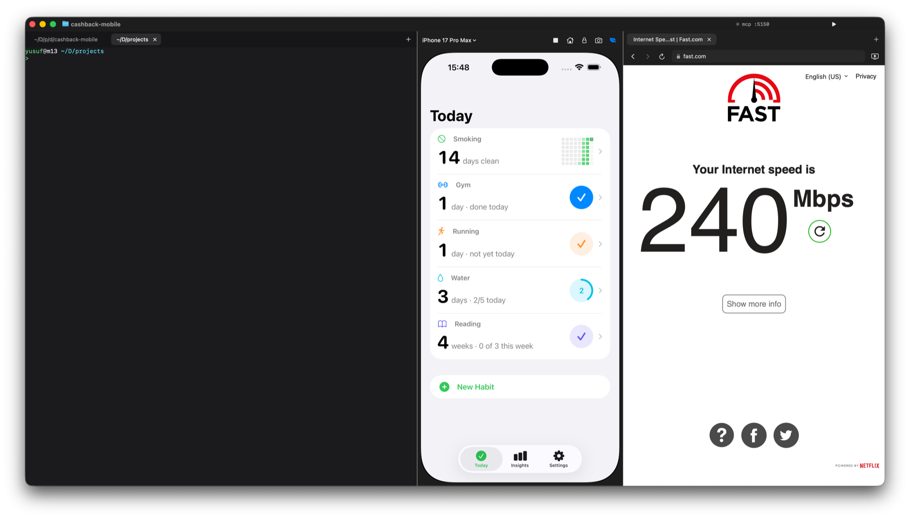

Build, watch, ship.
One window.
Vibex is a native macOS workstation: a terminal for Claude Code, the iOS Simulator embedded right in the window, and a browser on the side. Claude can see and drive all of it.

Vibex is a native macOS workstation: a terminal for Claude Code, the iOS Simulator embedded right in the window, and a browser on the side. Claude can see and drive all of it.

Made for a big display and a long session. No more ⌘-Tab between Terminal, Simulator and a browser.
Real PTY tabs on SwiftTerm with a Metal renderer. Fish by default, starts in your project folder. Run Claude Code here.
The iOS Simulator drawn straight from CoreSimulator's framebuffer, with touch, keyboard and hardware buttons. No Simulator.app window. Boots slim with simslim.
A tabbed WebKit browser. Your localhost preview opens in one tab while a show keeps playing in another.
Vibex registers itself with Claude Code on launch. Claude can screenshot and tap the simulator, read its accessibility tree, install and launch your app, open browser tabs, click by element ref, and read console and network logs.
Open a folder like in VS Code. Each window remembers its terminal tabs, browser tabs, simulator and layout. Claude in a project's terminal drives that project's window, never another one.
iOS apps build for the window's simulator, then install and launch. Web projects start their dev server and open a preview tab. Swift, Cargo and Go projects just run. Tweak it in .vibex.json.
⇧⌘P finds every command, project, tab and device. Type a URL to open it, or $ npm test to run it in a new terminal tab.
⇧⌘B gives the terminal room and shrinks the browser to a mini player. ⌥⌘W flips it for a break. Dividers spring between layouts.
Vibex is built from source with Xcode. Clone it, then make run.
# needs Xcode 26 with an iOS simulator runtime brew install xcodegen brew install mobai-app/tap/simslim # optional: lighter simulators git clone https://github.com/uwussimo/vibex.git cd vibex make run
Requires macOS 26 and Xcode 26. To build it yourself, set your own signing identity in project.yml. The simulator embedding relies on private CoreSimulator API verified on Xcode 26.6.